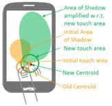
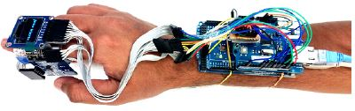
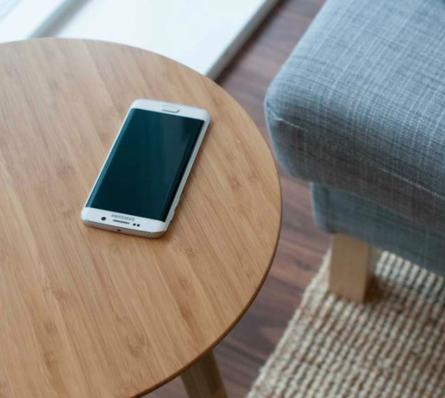
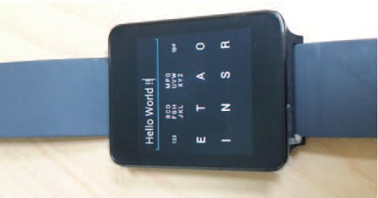
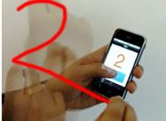
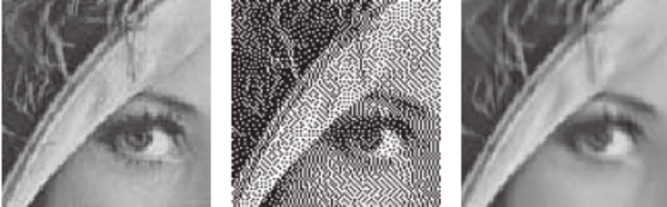
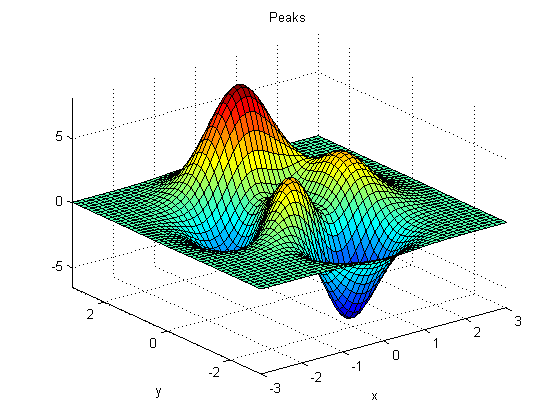
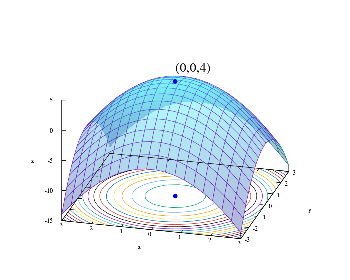

About Me
Hi! I received MS (By Research) from the Dept. of Computer Science and Engineering at IIT Kharagpur under the supervision of Dr. Debasis Samanta. The topic of my MS dissertation was Interactions with Smartphones and Smartwatches: Context-Awareness, Text Entry Interfaces, and Input Beyond Touch. I obtained my B.Tech in Information Technology from West Bengal University of Technology, Kolkata.
My area of research interest is Human Computer Interaction (HCI), mainly focusing on the development of natural and intuitive input and interaction techniques to enrich people's interactive experiences with computers in different form factors. This research includes text input interfaces, mobile interaction, wearable computing, and gesture based interaction.
Professional Experience
● Summer Intern | Samsung R&D Institute Bangalore | Internet of Things (IoT) Division (June '16 - Jan '17)
● Summer Intern | Xerox Research Center India, Bangalore | Distributed and Mobile Computing Group (May '15 - July '15)
● Project Trainee | ISI Kolkata | CVPR Unit (July '12 - Dec '12)
● Visiting Student Researcher | NIT Durgapur | Information Technology Dept (Feb '12 - May '12)
Awards and Fellowships
● Received travel grant from Microsoft Research India to attend CHI 2016.
● Senior Research Fellowship from SRIC-IIT Kharagpur, 2013 - 2014.
Publications
 Sanjay Ghosh, Joy Bose, Rajkumar Darbar, and Punyashlok Dash, Touch Shadow Interaction and Continuous Directional User Interface for Smartphone. In Proceedings of the 16th IFIP International Conference on Human-Computer Interaction (INTERACT 2017), 25 - 29 September, 2017, Industrial Design Centre, IIT Bombay, India. PDF
 Rajkumar Darbar, Mainak Choudhury, and Vikalp Mullick, RingIoT: A Smart Ring Controlling Things in Physical Spaces. PDF
 Rajkumar Darbar, Prasanta Kr. Sen, Debasis Samanta, PressTact: Side Pressure-Based Input for Smartwatch Interaction. In Proceedings of the 34th ACM Conference on Human Factors in Computing Systems (CHI 2016), 7 - 12 May, 2016, San Jose, CA, USA. PDF | Video
Rajkumar Darbar, Prasanta Kr. Sen, Debasis Samanta, PressTact: Side Pressure-Based Input for Smartwatch Interaction. In Proceedings of the 34th ACM Conference on Human Factors in Computing Systems (CHI 2016), 7 - 12 May, 2016, San Jose, CA, USA. PDF | Video
 Rajkumar Darbar, Debasis Samanta, SurfaceSense: Smartphone Can Recognize Where It Is Kept. In Proceedings of the 7th ACM International conference on Human Computer Interaction (IndiaHCI 2015), 17 - 19 Dec, 2015, IIT Guwahati, India. PDF
 Rajkumar Darbar, Punyashlok Dash, Debasis Samanta, ETAO Keyboard: Text Input Technique on Smartwatches. In Proceedings of the 7th IEEE International conference on Intelligent Human Computer Interaction (IHCI 2015), 14 - 16 Dec, 2015, IIIT Allahabad, India. PDF | Video
 Rajkumar Darbar, Prasanta Kr. Sen, Punyashlok Dash, Debasis Samanta, Using Hall Effect Sensors for 3D space Text Entry on Smartwatches. In Proceedings of the 7th IEEE International conference on Intelligent Human Computer Interaction (IHCI 2015), 14 - 16 Dec, 2015, IIIT Allahabad, India. PDF | Video
Rajkumar Darbar, Prasanta Kr. Sen, Punyashlok Dash, Debasis Samanta, Using Hall Effect Sensors for 3D space Text Entry on Smartwatches. In Proceedings of the 7th IEEE International conference on Intelligent Human Computer Interaction (IHCI 2015), 14 - 16 Dec, 2015, IIIT Allahabad, India. PDF | Video
 Rajkumar Darbar, Debasis Samanta, MagiText : Around Device Magnetic Interaction for 3D Space Text Entry in Smartphone. In Proceedings of the 3rd IEEE International Conference on Electronics, Computing and Communication Technologies (CONECCT 2015), 10 - 11 July 2015, IIIT-Bangalore, India. PDF
 Biswajit Halder, Rajkumar Darbar, Utpal Garain, Abhoy Ch. Mondal, Analysis of Fluorescent Paper Pulps for Detecting Counterfeit Indian Paper Money. In Proceedings of the 10th International Conference on Information Systems Security (ICISS 2014), 16 - 20 Dec, 2014, IDRBT Hyderabad, India. PDF
Biswajit Halder, Rajkumar Darbar, Utpal Garain, Abhoy Ch. Mondal, Analysis of Fluorescent Paper Pulps for Detecting Counterfeit Indian Paper Money. In Proceedings of the 10th International Conference on Information Systems Security (ICISS 2014), 16 - 20 Dec, 2014, IDRBT Hyderabad, India. PDF
 Biswajit Halder, Utpal Garain, Rajkumar Darbar, Abhoy Ch. Mondal, Inverse of Low Resolution Line Halftone Images for Document Inspection. In Proceedings of the 6th IAPR International Workshop on Computational Forensics (IWCF 2014), 24th Aug, 2014, Sweden. PDF
 Nanda Dulal Jana, Adiya N. Hati, Rajkumar Darbar, Jaya Sil, Real Parameter Optimization using Levy Distributed Differential Evolution. In Proceedings of the 5th International Conference on Pattern Recognition and Machine Intelligence (PReMI 2013), 10 - 14 Dec, 2013, Indian Statistical Institute Kolkata, India. PDF
 Aditya N. Hati, Rajkumar Darbar, Nanda Dulal Jana, Jaya Sil, Modified Artificial Bee Colony Algorithm Using Differential Evolution and Polynomial Mutation for Real-Parameter Optimization. In Proceedings of the 2nd International Conference on Advances in Computing, Communications and Informatics (ICACCI 2013), 22 - 25 Aug, 2013, Mysore, India. PDF